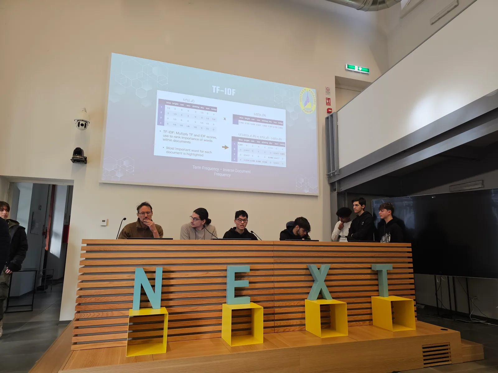
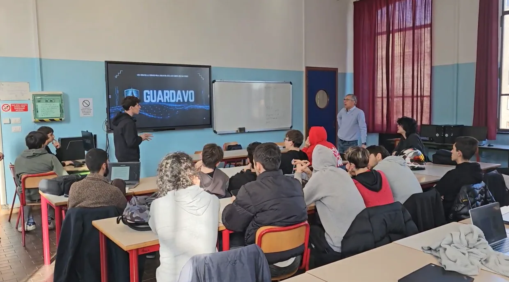
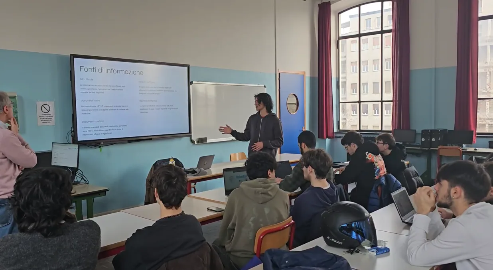
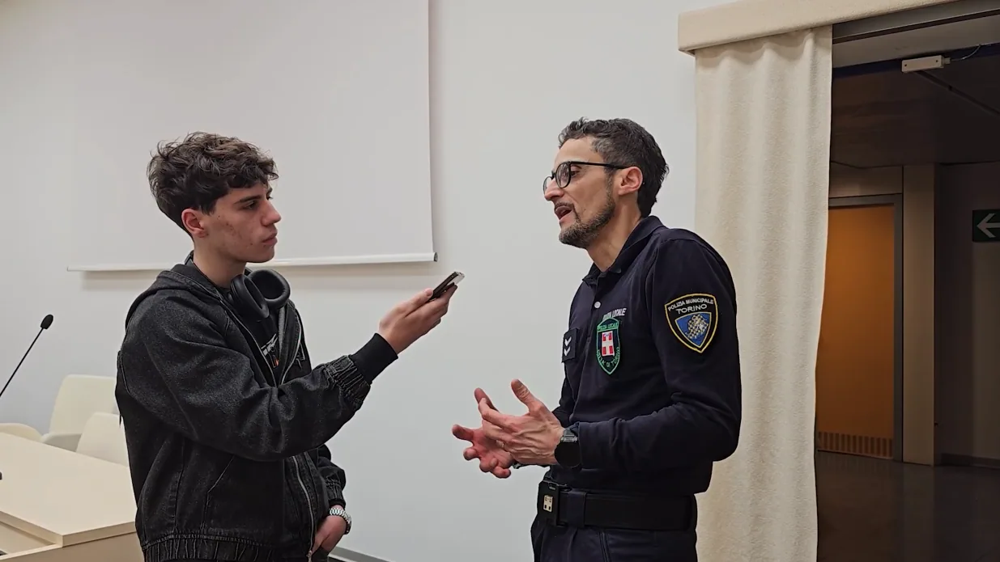
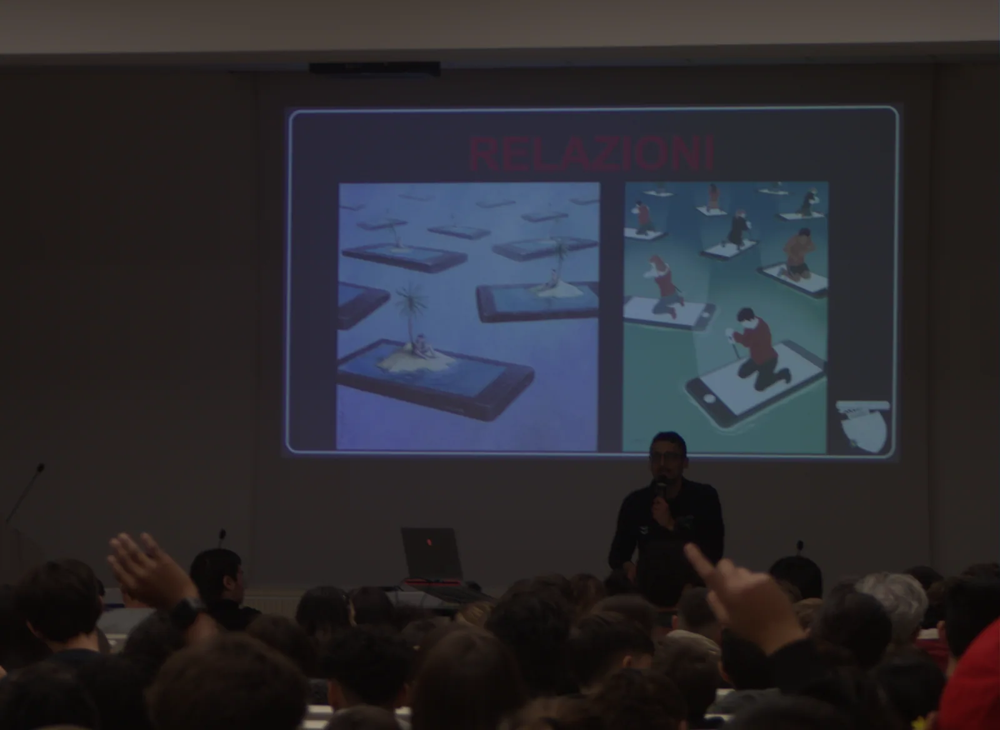

Gli studenti presentano l'architettura basata sul TF-IDF di
GustAvo al CSI Piemonte
I momenti salienti dei laboratori formativi al CSI Piemonte, gli incontri con Polizia Locale di Torino e MSC, e il backstage dello sviluppo.
Kickoff iniziale con i tutor aziendali, analisi delle esigenze di orientamento scolastico e definizione delle feature chiave di GustAvo.
Attività di programmazione e collaudo nei laboratori dell'IIS Amedeo Avogadro: strutturazione del dataset intents.json, addestramento del modello Scikit-learn e test del frontend.



Incontro formativo sui temi dell'Intelligenza Artificiale e i suoi pericoli con la Polizia di Torino, con dibattito e sessione di interviste condotte dagli studenti.




Le foto dell'incontro degli studenti con MSC e la video-intervista a Cristiano De Giorgis.
Un momento di confronto e approfondimento sull'adozione della metodologia Agile e le dinamiche del lavoro di squadra nel mondo IT aziendale.
Il dietro le quinte del progetto GustAvo: montaggio e configurazione del totem interattivo, integrazione hardware con Raspberry Pi e momenti di lavoro degli studenti nei corridoi e nei laboratori dell'Avogadro.